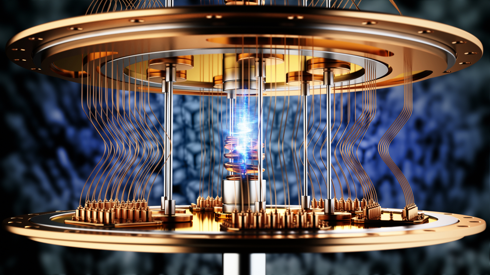
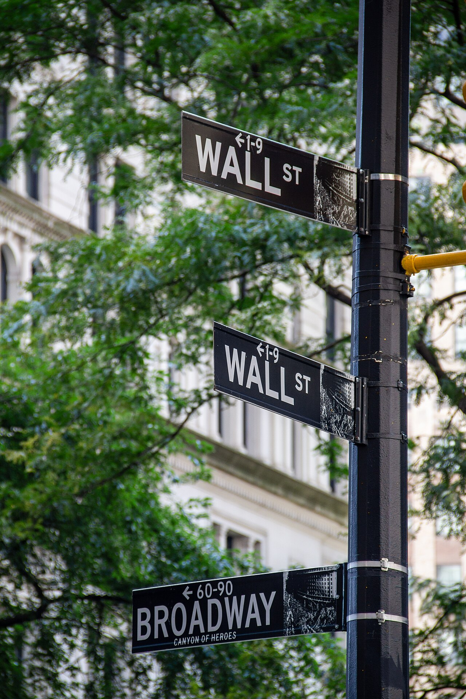

Quantum · AI · FinTech · Quant Finance
A Taiwanese student cohort for academic and professional exchange.
Taiwan Q-Fin Hub is a student cohort participating in Taiwan’s Youth Overseas Dream Fund, supported by the Youth Development Administration, Ministry of Education.
In Summer 2026, the cohort will visit the Greater New York area for an academic and professional exchange focused on quantum computing, artificial intelligence, financial technology, and quantitative finance.
Through academic visits, expert discussions, professional networking, and post-program reflection, participants explore how emerging technologies connect with financial systems, research communities, and global innovation ecosystems.


A five-week exchange program across academic, research, and professional communities in the Greater New York area.
For academic exchange, professional networking, or collaboration inquiries, please contact us.
Contact Us